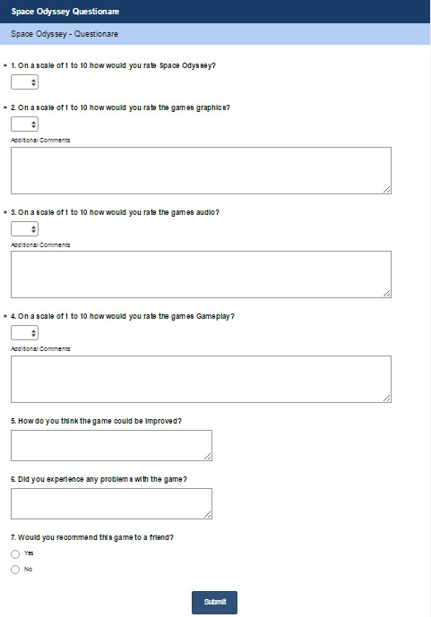
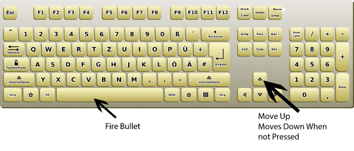

[Unit 22 D2] – Good Program Design

Good program design is essential when it comes to keeping a program well maintained and up to date. Below are the major sections as to what constitutes good program design.
For all parts of D2 have you detailed how what you have said assists in the maintenance debugging fixing and amending, and extension adding content new levels assets and dlc of the game?
Naming conventions are absolutely essential when it comes to good program design for a variety of reasons. For example having a good file naming convention is extremely important mainly for the programmers use because if you have bad file name management then you will be unable to keep working on the program/game because after a while of programming and once you get quite deep into the program then it will become more and more difficult to keep the program maintained and keep adding to it because eventually you will lose track of where all the different files that you need to edit are. For example if you are working on a game for about a year then the game will likely become very segmented and all the files will be in different places instead of one single program because it is easier to maintain however if you have good naming conventions then it will become significantly easier to find the files that you need to edit rather than searching around for hours just to find one single file if you named them badly.
Having an agreed naming convention across the entirety of a game will make it easier for new people to join in the project ac well because they can just learn how the naming works for your project and they will instantly know the location of any important files that they need to edit for their job.
Having a bad naming convention may mean that new people are unable to get properly involved in the project because they will not be able to find anything that they need and therefore will be unable to get anything done. It also makes it more difficult for the existing developers to understand what they have written and how to improve/edit it.
Having a good naming convention will also allow the developers to send an update to the game easier because everything in the new updates will be names correctly. For example a game like GTAV will have very good naming conventions because the game is so large and the amount of updates, DLC and Maintenance required for the game to keep on running is massive and a badly managed system would not be acceptable or doable for the developers.
For example naming a file “game_file” would be a very bad example of a file name because every file in the entire project could be called that therefore you would never know what the file actually contained. On the other hand if your files are called things like “AK47_Fire_Sound” then that would be an example of a good naming convention because right from the second you look at the file name you know exactly what the file contains and you don’t have to open it just to find out what it contains.
Variable naming is essential for a good program design because bad naming would mean that the developers would very quickly lose track of what variables contain what information and also make it harder to make an update for the game because you may accidentally use the same bad variable name twice because it is so ambiguous for example the variable called “name” would be basically useless because there are a lot of instances within a large game where a variable called name could possibly be appropriate and therefore you could accidentally overwrite the information within the variable with something completely irrelevant to the original purpose of the variable.
When it comes to maintaining the program it will be very useful to have a good naming convention because if you do then the programmers will be able to quickly look at what the variable name is and instantly know what it is for and what it contains rather than having to check what every single variable they come across contains. Having a bad system for naming variables could cause chaos for developers because they are unable to understand their own code, it also makes it practically impossible for new developers to begin on a project because none of the variable names will make sense and they will have a very hard time trying to work out what each and every one of the variables mean.
In terms of releasing updates/DLC for the game or program it will make this task very difficult as well because you may accidentally reuse a variable name that is already used in the game and cause massive problems and crashes. Having a good naming for variables will allow you to quickly hook the update into the old game files and allow very easy and simple updates.
For example a good variable name for a customer’s name could be “customer_name” this is good because it allows the reader to instantly know exactly what the variable contains and what type it likely is. Another good example of a variable could be “player_health” for the player’s health because again you can immediately see what the variable is and what it contains.
A bad example of a variable name would be “x” because no matter what it contains you cannot tell what it is easily and you would have to start searching through the program just to find what the variable contains.
For large games commenting is a must because it helps massively with looking at your own code because you will be able to see at a glance what each section of code within a single file is responsible for and what its purpose is.
Commenting all your code at least a bit allows new people in the team to quickly scan over the previous code and instantly know what all of the sections do so will allow them to start working sooner rather than looking in detail at every single bit of code trying to decipher what does what and where everything is.
For updates commenting makes it much easier to update the pre-existing code because you can just look for the commented section for the trigger system and immediately know which bit needs editing for the new update.
This also allows much easier maintenance of the program because each section of the code is separated and every member of the team can quickly and efficiently find an exact bit of their or someone else’s code. It also allows people from other areas of the team to edit someone else’s code almost as easily as they could edit their own.
Basically all high level programming languages today have some form of commenting as it is a required system to be able to tell fellow developers what code does and how it works.
An example of a good comment could be:
//This section of code is used to print the menu to the screen: cout << “Please enter the option you would like” << endl
cout << “1 – play” << endl cout << “2 – help” << endl cout << “3 – exit” << endl cin >> option
//This Is used to determine the outcome If (option == 1)
{
//this sends them to the game function Game();
}
This is an example of good commenting because it allows the next programmer that sees it including the original developer to immediately understand exactly what the section of code does so it will allow them to edit it as deemed necessary.
Good structure is essential for larger programs and games because when code gets to a certain length it becomes impossible to understand it unless there is a set structure in which it is laid out for example when you are writing a piece of code that involves the use of functions, if statements or loops then the best practice for structuring this would be to indent all the code that lives within the loop or if statement so that when you look back on it is easier to determine how the program functions and how it work.
Good structure is essential for the maintenance of a game because if the code has a good structure to it then looking back and editing old code is pretty easy because it is easily understood and if you keep with the general structure of how it was originally written then it is easy to understand. However, if you do not stick to a general structure when writing your code then you are going to have problems because if you or another developer looks over the code to edit or look at it to understand later code will have a very hard time because all the code will be as one big clump and will become unreadable because you will not be able to make out how the program even functions.
An example of good structure could be:
If (option == 1)
{
}
Else
{
}
//Notice the indent here to signify the code is a child of the if statement Cout << “you put 1” << endl
Cout << “you did not put 1
Modularisation is very important for the upgrading or updating of a game or program because it allows a massive game to be divided up into subsections or folders in which there are lots of different program files. Each of these modules then do a specific function such as there will be a file that solely is responsible for the trigger of the weapon and whenever a gun is required to fire anywhere else in the code they can just simply refer to this section of code for that purpose cutting down on the amount of times that code has to be duplicated or remade for the same purpose.
This kind of development is called modular programming and is very useful for updating the program at a later date or adding functionality. For example, with some games they have a system called DLC which is basically a way to make the user pay for more content should they want to buy it but only if they already own the game. And the way this could work is that the main game files will try to reference a specific file within its game files and if the file isn’t there it will ignore it and it will know that you do not have the DLC however if you have bought the DLC then the game files will be there for the DLC and the game can immediately retrieve them and use them within the main game without having to download the entire game just for a bit of different functionality.
Games such as GTAV use this type of development extensively because the developers have the ability to send people who own the game updates and this will then allow them to download the new game files and therefore updating the required files but leaving all the unchanged files unchanged by the download therefore when a user is downloading the update they might only have to download the new content such as the new weapon files which may be a couple of GB instead of downloading the entire 60GB game all over again.
Other advantages of modular programming when it comes to the maintenance of the game would be that because each subroutine is in its own separate file this allows the developers to compile, run and debug only the single bit of code instead of having to recompile the entirety of the game every time they want to test of debug a small part of the code.
Another advantage of this method programming is that a trigger system for example can be copied and used for other games/programs in the future because it is completely modular and as long as the correct information is passed to it then it will function as expected
Testing a lot of different modules however can be time consuming because if something breaks then it can be hard to know exactly what I was that broke and therefore you may spend ages trying to
figure out what’s wrong with the trigger system when actually it is a bug in a different section of the code entirely.
Reusing these modular sections of the game can be very useful and time saving because it means that the developers must rewrite the entire script again because they can just refer to the same bit of code again and it also cuts down on file size because there is only one instead of 100 duplicates for every weapon for example. However, reusing can also lead to problems if the exact correct data is not passed to the program because the function will expect one set of information and if it is given the wrong data then it will not be able to function properly if at all.
An example of modularisation could be in stencil where if you have a group of events that constitute a specific system for example a group of events that control how a button works for a menu system.
All of these events are used in order to control the main menu button for the start button and they could all be combined into one behaviour that could be reused to control each individual menu button without having to replicate the code again and again. This event is called when click move scene and is used to determine when the user has clicked on the menu item and move it onto the main menu scene.

This event is called when hovers change animation. This event is used so that when the user hovers over the button the visual is changed in order to indicate what is being selected.

This event determines when the user stops hovering on the button and changes the animation back to the default so you know what is being selected.

This event is used to quickly change the animation to a different animation to show the user that the button has been clicked.

Good design is essential when it comes to the development, maintenance and expansion of games.
A good method of game design is to use a storyboard because it is extremely helpful in determining where you want the game to start and what its end game/goal is going to be. A good well designed storyboard will allow game developers to really decide what they want they want to do and what angle they want to take to achieve a certain task in the storyboard.
A good storyboard will allow a team of developers to work better with each other because everybody in the team can work on a different section of the storyboard once the backend is complete to allow the project to move along more seamlessly. Having a good storyboard also allows the developers to see where they may be missing things and how to best implement the things they have missed. Storyboard will also allow for better updates to the game because they can look at the existing storyboard and decide what they should add to best improve the games playtime or enjoy ability.
Another good method for game is a mood board this is especially good for coming up with the base idea for the game and coming up with the art style that you are going for within the game because a mood board is a very visual thing and is used to determine what the game is going to look like. This can help with the maintenance and expansion of the game because when the developers are looking to add new content to the game they can look back upon the mood board and very easily determine what the art style for the new weapon/other content will be like. This helps keep a very streamlines look to the game and makes the experience more immersive.
The final good method of design is pseudocode because it allows you to prototype the functions within the game and afterwards because pseudocode is not language specific it allows the prototype to be converted into any other programming language which may be used by the game. This will help with the maintenance of the game because you can refer to the original pseudocode to determine what the code does and it will allow new developers to understand the game and its coding much much faster than just reading over the actual code.
The Questionnaire - [Unit 22 M4]


The Results

Question 1:
Overall the general verdict from the people I gave the questionnaire to said that the game was good but needs work in order to become a decent and playable game. The mode of the results on the scale of one to ten was seven therefore the game was good and playable but needs work.
Question 2:
According to the results of the questionnaire the game needs lots of work on the graphics because when asked about the graphics the mode was 3.5 therefore the graphics need a lot of work for the game to become viable.
Question 3:
The games audio also seems to need lots of work the mode result was 4.5 out of ten therefore the audio is low quality and needs redoing for this game to become properly playable.
Question 4:
The games gameplay seems quite good because it received on average 7 out of 10 therefore the gameplay might need refining a bit but mostly it is ok.
Question 5:
When asked about how the game could be improved the general consensus was that there needs to be more gameplay elements in the game as well as some people said that the game was a bit too difficult to play and therefore an improvement could be to add a difficulty setting that the user can change to their gameplay style
Question 6:
Some people said that they encountered some bugs while playing the game so therefore something that could be improved would be to do some more bug testing and getting more people to play the games and report back on the bugs that they find
Question 7:
The majority of the respondents said that they would recommend the game to a friend however it was only just a majority and therefore the game needs work to make it a viable game to sell otherwise nobody will recommend it and it may not do very well
The Game –[Unit 22 P4, M2]

The following screenshots are of all the different scenes of the game running:
The Splash screen is displayed when the player firsts starts up the game in order to let the user know what the game is called and give the game time to properly start.
This image is the main menu screen where the user gets to decide what they would like to do next; this scene acts as a hub for the rest of the scenes to be launched from. The options the player has are start: which will start the main level scene, controls, about and exit.

This image is the main level, the aim of the game is to fire bullets at the enemy and kill them all while staying alive with the most lives possible.

This image is for the mini game which is achieved by killing every enemy on the main level. The aim of this level is to hit the massive UFO as many times as possible to kill it. However the enemy lasers will instantly kill you so your priority is to dodge his bullets.
This image is the end game screen this is for when you die. Your score is displayed on the screen as well as a back button that allows you to go back to the main menu in order to start again.
This image is the script that times how long the splash screen will stay on the screen before the main menu is displayed.
This event is called when click move scene and is used to determine when the user has clicked on the menu item and move it onto the main menu scene.

This event is called when hovers change animation. This event is used so that when the user hovers over the button the visual is changed in order to indicate what is being selected.

This event determines when the user stops hovering on the button and changes the animation back to the default so you know what is being selected.
This event is used to quickly change the animation to a different animation to show the user that the button has been clicked.
This event is called when click move scene and is used to determine when the user has clicked on the menu item and move it onto the main menu scene.
This event is called when hovers change animation. This event is used so that when the user hovers over the button the visual is changed in order to indicate what is being selected.

This event determines when the user stops hovering on the button and changes the animation back to the default so you know what is being selected.

This event is used to quickly change the animation to a different animation to show the user that the button has been clicked.

This event is called when click move scene and is used to determine when the user has clicked on the menu item and move it onto the main menu scene.
This event is called when hovers change animation. This event is used so that when the user hovers over the button the visual is changed in order to indicate what is being selected.

This event determines when the user stops hovering on the button and changes the animation back to the default so you know what is being selected.

This event is used to quickly change the animation to a different animation to show the user that the button has been clicked.

This event is simple used to play the games background music.
The first event on here is used to draw the score on the screen in the top left hand corner of the screen.
The second event is used to constantly check what the score if and if the score hits or goes above 24 then the level is moved on to the mini game so you can continue playing.
The third event is used to make sure that the music is still played so it doesn’t stop playing during gameplay.
The last event is used in order to display the users health variable in the top right of the screen.
The first event is used in order to control the movement of the player ship and loops checking the keys pressed and changing the player’s ship speed accordingly.
The second event is used in order to stop the player from going off the screen by changing the absolute position to 1 pixel from the edge when the ship contacts the edge.
The third event is used to fire bullets upwards from the player ship when the fire key is pressed. The fourth event is used in order to receive a broadcast when the player ship is hit by an enemy and
lower the player’s health.
The fifth event is used to move to the end game screen and end the game when the player’s health hits 0.
The last event is used to set the players health to 0 when the player is touched by an enemy ship
The first event is used for when the bullets come into contact with the enemy to activate a health drop in the enemy’s events.
The second event is used to kill the actor off when he exits the screen therefore limiting system resource usage.
The last event is used to detect when the bullet hits a blockade and therefore activate a hit in the blockade events.
This event is called when click move scene and is used to determine when the user has clicked on the menu item and move it onto the main menu scene.
This event is called when hovers change animation. This event is used so that when the user hovers over the button the visual is changed in order to indicate what is being selected.

This event determines when the user stops hovering on the button and changes the animation back to the default so you know what is being selected.

This event is used to quickly change the animation to a different animation to show the user that the button has been clicked.
The first event is used to detect a hit on the actor and lower the health aswell as play an animation for hit.
The second event is used when the actor is created and sets its health to 4
The third event is used to detect when the health is lower than or equal to 0 and kill the actor.
The fourth event is used to up the games difficulty if the player manages to get to a score of 100 by changing the speed at which the enemies fire.
The fifth event is used to trigger kill to kill the player when he touches the player directly. The sixth event is used to kill the blockades when the enemy touches the blockade directly.
There is a behaviour that is used in order to move the enemy back and forth at a constant rate.
The first event is used to detect when the bullet hits the player and trigger a hit in the player and kill the bullet.
The second event is used to kill the bullet if it exists the screen to limit resource usage. The last event is used to kill a blockade actor if it contacts one.
This event is used to kill the blockade when it receives a broadcast that it has been hit.
The first event is used to set the UFO’s health
The second event is used to detect when the UFO’s health hits 0 and then move back to the main level to continue playing as well as give the player score.
The third event is used to determine when the enemy is shot and decrease health and play hit animation.
The fourth event is used to determine when the enemy fires his bullets and this is repeated four times to ensure that the bullet kills the player ship.
The first event is used to control the ships speed so when the player presses up the ship moves upwards and when they let go the ship drops down.
The second event is used to keep the player ship on the screen by moving the player 1 pixel away from the edge of the screen when the hit the edge of the screen.
The third event is used to determine when the player presses the fire button and fire a bullet towards the enemy.
The fourth event is used to determine when the player is hit and decrease the health accordingly. The fifth event is used to kill the player when its health gets below 0 and move to the end game
screen.
The first event is used to determine when the bullet hits the UFO and kills the bullet and triggers a hit on the UFO.
The second event is used to kill the bullet when it exists the screen.
The third event is used to kill a blockade if the bullet hits it (not used in this scene, but it’s there just in case they are added)
The first event is used to kill the enemy’s bullet if it exists the screen
The second event is used to trigger a hit in the player ship if it contacts it and kills the bullet.
This event is used to determine when the player clicks on the button and moves scene to the main menu.

This event is called when hovers change animation. This event is used so that when the user hovers over the button the visual is changed in order to indicate what is being selected.

This event determines when the user stops hovering on the button and changes the animation back to the default so you know what is being selected.

This event is used to quickly change the animation to a different animation to show the user that the button has been clicked.

This event is used to draw the player’s final score on the screen in the centre.
Space Odyssey
User Guide
A quick guide on how to play the game as well as a walkthrough of the actors and other game graphics.

In the year 2055 aliens have begun their invasion of earth and are trying to destroy humanity however earth has launched its last hope into space, You!
Your aim is to destroy as many aliens as you can before your inevitable doom. The future of the human race is in your hands!
How to play

In the games main menu simple click the start button to begin your journey.
In the main level use the left and right arrow keys to move your space ship. Using the space key to fire your lasers at the enemy robot space ships. You must hit each enemy 4 times in order to kill it. Avoiding the enemy bombs is crucial because you only have 3 lives then its game over and earth will be destroyed. Killing all the enemies will progress you to the next level.
In the mini game your aim is to hit the enemy as many times as you can and eventually it will die. However again your priority is to avoid the UFO’s lasers because they will kill you instantly. After killing the UFO you will go back to the main level to continue playing.
In the end game screen your score will be displayed in the center and to get back to the main menu to start again simple click the back button.